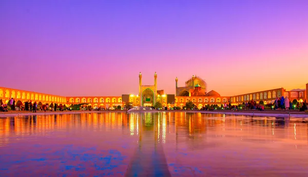

where is Isfahan?
Isfahan is famous for its Perso–Islamic architecture, grand boulevards, covered bridges, palaces, tiled mosques, and minarets. Isfahan also has many historical buildings, monuments, paintings and artifacts. The fame of Isfahan led to the Persian pun and proverb "Esfahān nesf-e- jahān ast": Isfahan is half of the world.
Click in image to change
